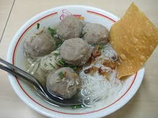

|
|
Cara Membuat Ba'so Ayam
- Masukkan daging ayam yang telah digiling ke dalam wadah, campurkan tepung kanji, telur, lada bubuk, garam, bawang putih yang telah dihaluskan dan bawang merah goreng.
- Campur atau uleni dengan tangan atau bisa menggunakan alat sampai semua tercampur sempurna.
- Jika dirasa adonan masih lembek dan sulit dibentuk, maka bisa ditambahkan es batu secara perlahan sampai dirasa adonan bisa dibentuk.
- Rebus air dalam panci sampai mendidih
- Ambil adonan daging dengan tangan lalu bentuk bulat baik dengan kedua tangan atau dengan satu tangan ditekan hingga adonan keluar melalui jari telunjuk dan jempol.
- Masukkan adonan yang telah terbentuk ke dalam air panas.
- Lanjutkan hingga semua adonan habis.
- Jika pentol telah mengapung maka pentol telah matang. Angkat
Bahan
- Daging ayam 1 kg, tanpa tulang, giling
- Air 2 L
- Bawang putih 4 siung, haluskan
- Lada bubuk sdt
- Bawang merah goreng 2 sdm
- Es batu 40 g, hancurkan
- Garam 1 sdt
- Telur 1 butir
- Tepung kanji 50 g
|

Video on Youtube
|